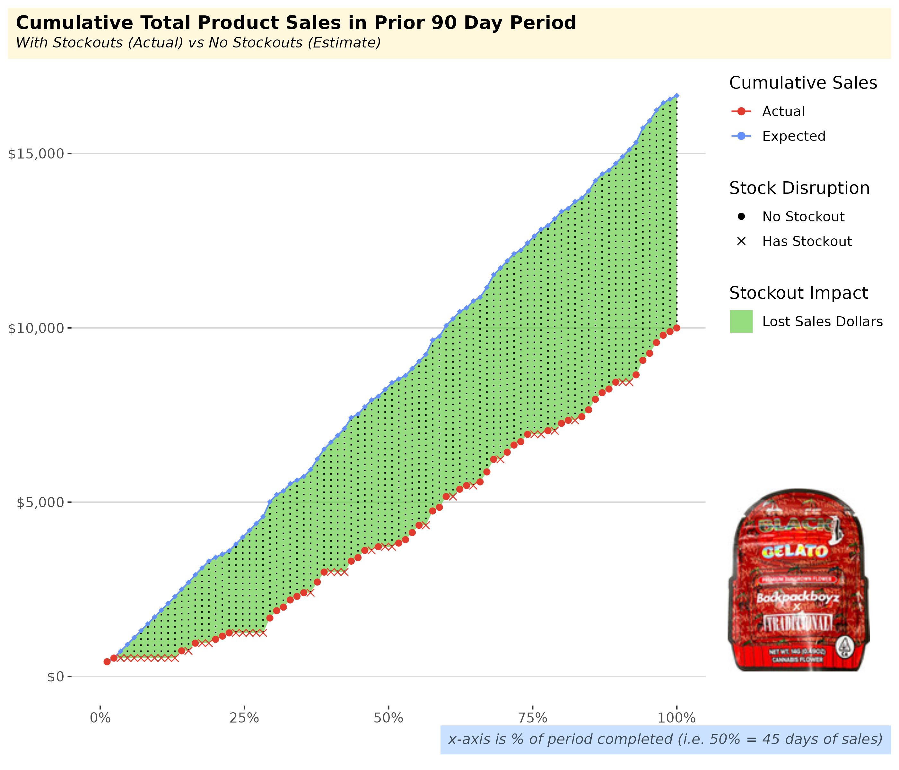
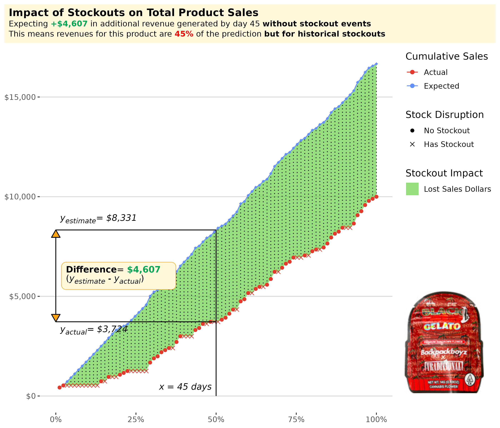
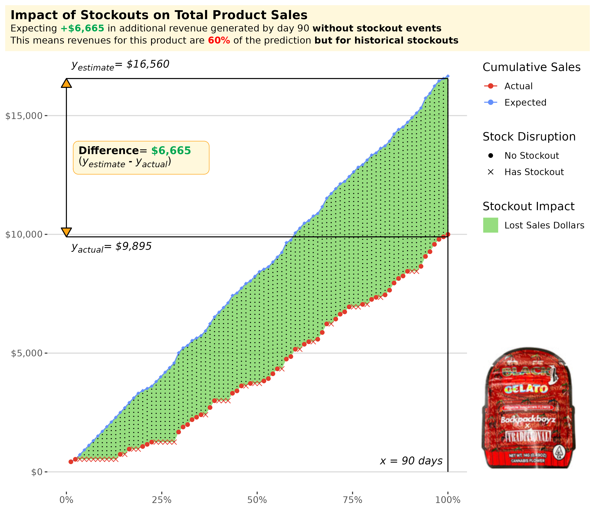

This post has an associated public app that is available here. Simply login with google to access.
Objective
This case study uses a key flower product for an anonymized retailer and analyzes the sales driven by this product over a 90-day period in order to estimate1 what sales would be if not for product stockouts. Expected total revenue generated by the product through each day of the period is modeled and shown in Figure 1.
- For the product selected in this case study, an important Flower menu item that has regular unit sales and drives the majority share of the order dollars when purchased2, total sales revenue at the end of 90 days is 60% of what it could be, if not for product stockouts (Figure 3).
- In a scenario in which supply issues do not lead to stockouts, this translates to additional revenue of $6,665 for this product after 90 days of sales (Figure 3). Similarly, the impact after 45 days with no stockouts for this product is increased revenues of $4,607 (shown in Figure 2).
- The modeling approach used here suggests that any actions taken to reduce the likelihood of product stockouts for important revenue-driving products would yield immediate benefit in the form of increased sales for these products on a daily basis (Figure 1)
Definitions
To get started, let’s align on a couple definitions…
- Product Stockout
-
A stockout occurs when customer orders for a product exceed the amount of inventory kept on hand. This situation arises when demand is higher than expected and the amount of normal inventory and safety stock is too low to fill all orders.3
- Primary Product
-
I define a primary product as a product that when purchased, drives the majority of the total order dollars. On average, if a product drives over 50% of the total ticket sales, this product would be classified as a primary product. In contrast, a secondary product typically is thought of as an ‘order add-on’ and drives a smaller share of the customers’ total spend per order.
Results
Figure 1 shows the actual cumulative sales for this primary product over the course of a 90-day sales period as well as the expected (or predicted) cumulative sales in a world in which there are no stockouts occurring during the period. The difference between the lines on the chart (the area denoted in green) is the sales impact of stockouts at particular points in time.

Since we are using 90 days for our sales period, the 50% mark on the x-axis corresponds to 45 days. At 45 days, the difference between the actual sales (with stockouts) and the expected sales (without stockouts) is the total sales generated through 45 days but-for stockouts. See Figures 2 and 3 for additional clarity.
Sales But For Stockouts
The annotated plots below provides additional guidance for reading and understanding the results. At any given time during the period, to see the sales impact from stockouts through that moment in time, look at the difference between the prediction and the actual sales.
To illustrate this, we can see that when we are 50% of the way through the period (i.e. day 45 of a 90 day period), the difference at that moment in the estimate and the actual sales is highlighted in the plot below.

Similarly, we can see the same insight at day 90 (x = 100%) below. The difference between estimated revenue and actual revenue after 90 days of product sales is called out below.

- The product identified for this case study is a regular menu item, one that is a primary product, and has no recent upward or downward trends in sales for the 90 day study period.
- By selecting a primary product with neutral sales trend (flat, no increase or decline in sales over time)4, but specifically one that has stable daily unit sales (uniformly distributed throughout the period), we can best illustrate the methodology we use to estimate the dollar impact of stockouts in the period.
- In this case study, stockouts are implicitly identified using days with no unit sales as the proxy for a stockout occurring. This is justifiable as we specifically use a product with regular daily unit sales throughout the period.
- In generalizing this methodology or extending this work, we would utilize historical daily inventory snapshots to explicitly identify whether there is a product stockout for a particular sales day.
- It’s important to highlight the fact that the expected gains in revenue are at the product sales level. In practice, when a product experiences stockouts, oftentimes retailers have available substitutes to limit any negative impacts to the Retailers top-line revenues. However, for a select group of products with high customer loyalty, not all the sales can be recovered and best efforts need to be made in order to mitigate stockout events.
Footnotes
This estimate requires a simple modeling approach that utilizes a running average of sales velocity for this product to approximate the sales we’d expect on any given day there was a stockout↩︎
Otherwise known as a ‘Primary Product’. See definitions in section Definitions for more↩︎
In Cannabis, stockouts are typically rooted in issues on the supplier side, in contrast to other retail industries where they are more often caused by unexpected and unforeseen rises in demand↩︎
When sales are trending in either direction, we would account for such trends by adjusting the reorder quantity required from the supplier to meet the anticipated trends in sales velocity. In doing so, the impact of a stockout when expressed as a percentage of total dollars lost, would remain the same with or without trends↩︎